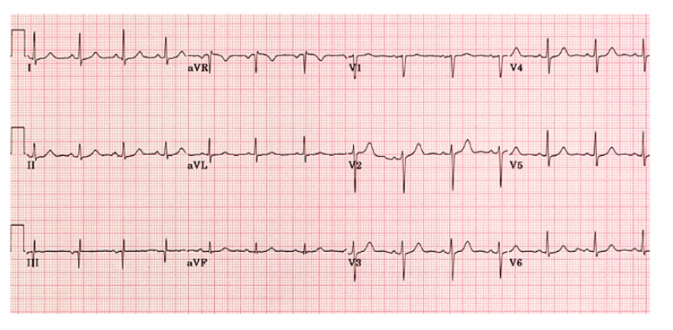
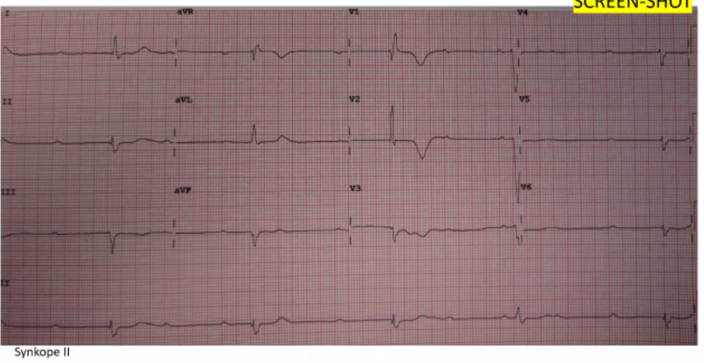
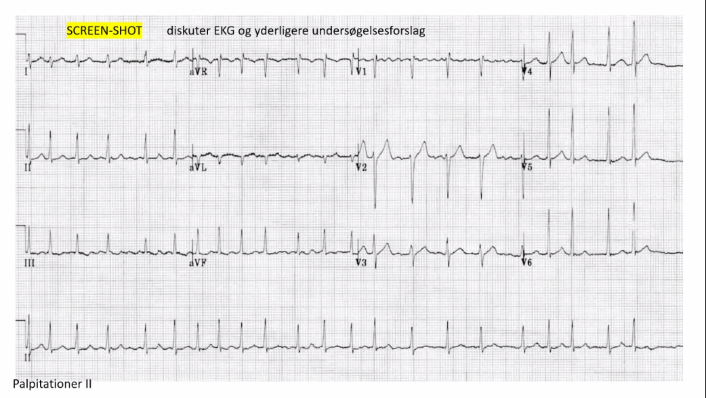
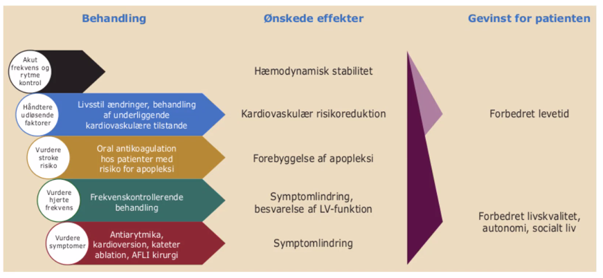
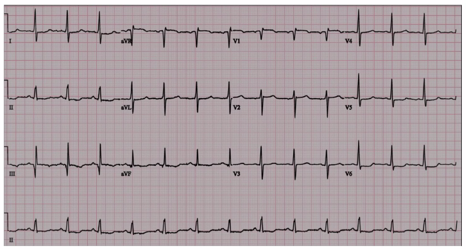
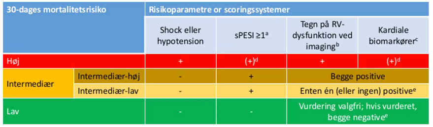
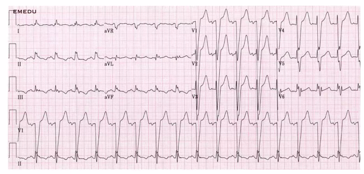
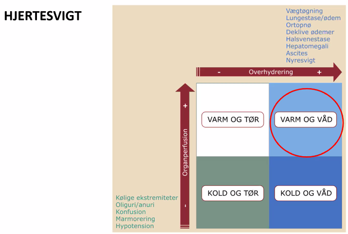
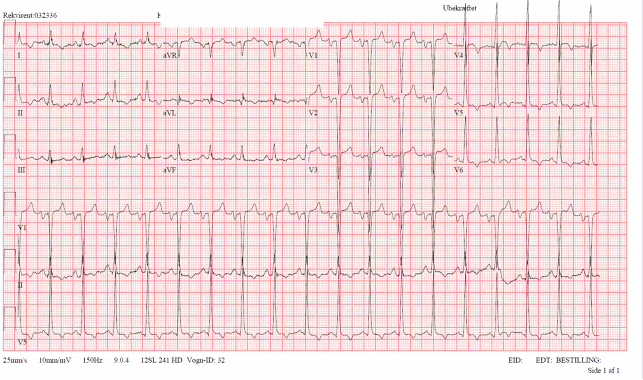

Kardiologi
Dan siger velkommen - Godmorgen dag 3
- Dan kan ikke lægge slides ud før undervisningen
- Chatten: Dan ved ikke hvad Discord er, selvom han købte sin første PC mens vi gik i børnehave
- Hvis man skriver i zoom-chatten, så svarer det til at råbe under forelæsninger
- Chatten er lukket
Introduktion
- Lene siger velkommen
- cardio.dk er netop opdaret med nye
- Start fra bunden og læs om akutte hjertesygdommme
- https://nbv.cardio.dk/akut
- Mere EKG-træning:
- life in the fastlane
- ECG-bibliotek
- litfl.com
- cases + quizes
- Derudover ABCDE-artikel fra ugeskriftet.
Til eksamen og IRL
- ABCD (hurtigt eller grundigt afh. af situationen og symptomer) + evt EKG
- Livreddende tiltag (ex. ilt, venflon til væske/blodprodukter, anæstesi)
- Plan for monitorering (telemetri, 12 afl EKG, saturation, BT, smertevurdering, a-kanyle osv) — del din plan med sygeplejersken
- Anamnese + obj. us
- Videre udredning (biokemi, billeddiagnostik)
- Arbejdsdiagnose, differentialdiagnose
Dagens program
- Synkoper / palpitationer
- Dyspnø
- Brystsmerter
- Blandet
Case 1 - Synkope I
- 37 årig mand indbringes i akutmodtagelsen efter besvimelsestilfælde
- Umiddelbare oplysninger:
- Pt sad på restaurant og spiste.
- Synker sammen og glider ned på gulvet
- Vågner efter få (?) minutter
- A: Fri vejrtrækning, normal kulør
- B: RF 12/min, egalt luftskifte, SAT 100% uden ilt
- C: BT 110/65, puls 72/min. Varm og tør
- D: vågen og klar, BS 7,4 mM, normale pupilforhold
- E: Upåfaldende udseende — ingen synlige sår eller hudforandringer, TP 37,0
- Der er nu gået ca 15 minutter siden besvimelsen — Hvad nu — se EKG på
- næste side?

- Gennemgang af EKG
- Sinusrytme. Regelmæssig, f lige under 100. smalle QRS. Ingen st-deviation
- T-takker normal.
- Normalt EKG.
Anamnese
- Hyppighed
- Forvarsel
- Palpitationer eller dyspnø før?
- Slog patieten sig?
- Relateret til anstrnegelse
- Liggendestillinge
- Risikofaktorer
BP
- Elektrolytter
- Hgb
Risikopatienter
- Man kan ikke huske det uden ad. Kig i vejl./instruk når disse pt udredes.
Case 2 - Synkope II
86 årig kvinde indlægges efter synkope
Pt bor i eget hjem. Får behandling for forhøjet BT men ellers ingen anden medicin, oplyser at hun har følt sig træt gennem længere tid.
Besvimer pludselig da hun sidder ved sit spisebord og løser krydsord.
Falder hen over bordet
Bruger sit nødkald da hun kommer til sig selv
A: Fri vejrtrækning,
B: RF 16/min, egalt luftskifte, SAT 100% på nasal ilt 2 liter/min
C: BT 95/45, puls 28 (uregelmæssig). Varm og tør
D: vågen og klar, BS 7,4 mM, normale pupilforhold
E: Upåfaldende udseende — ingen synlige sår eller hudforandringer, specielt ingen sår eller traumer i hoved/ansigt, Tp 36,8

- EKG -analyse:
- P-takker ikke sammen emd QRS. 3. grads AV-blok m. nodal-rytme. Negative T-takker i V1-V3.
- Lenes EKG-fifs: Kig på rytmestrimmel nederst for romer II.
- Behandling
- Skal have en pacemaker. Først en midlertidig, senere evt. permanent.
- Kan transkutantpace hvis ustabil. Isoprenalin
- Yderligere diagnostik
- Infektion? Så skal perm. PM afvente, så den ikke bliver inficeret.
- Spg:
- Negative T-takker?
- Eskapade slag har tit abnorm konfiguration
- Så dem skal man ikke fokusere så meget på.
- Negative T-takker?
Behandling (3.grads AV-blok)
- Atropin 0.5 — 1 mg i.v hver 5. min (højst 3 mg)
- Isoprenalin 0,02 - 0,2 ug/kg/min, optitreres til ønsket effekt (forsigtighed ved AMI).
- Transkutan pacing (Zoll-pacemaker) som akut behandling og som backup under transport til et pacemakerimplanterende center.
- Transvenøs pacemaker — temporær eller permanent
Case 3 - Palp/hjertebanken II
73 årig kvinde indlægges af egen læge under diagnosen ”arytmi”
Pt oplyser: fornemmelse af uroligt hjerte i 1 uge
I øvrigt helt rask — tager ingen medicin
Opsøger egen læge, der måler puls og BT samt stetoskoperer. Kan ikke tage EKG
ABCDE: Upåvirket, undt. puls 120 uregelmæssig

- EKG med AFLI. Svært med frekvens.
- HAS-BLED og CHADVAS
- Konverteres til normalrytme, men vent hvis AFLI > 48 timer, inden DC-konvertionsforsøg da trombe i atrier
- Yderligere undersøges?
- Ekko,
- IHD?
- Hypertension?
- Blodprøver (anæmi, TSH, infektion)
EKG begreber
Paroksystisk: Selvlimiterende episoder af AFLI, der i mange tilfælde varer < 2 døgn, men kan vare op til 7 døgn. AFLI episoder der konverteres indenfor 7 døgn kaldes også paroksystisk.
Persisterende: Episoder af AFLI der varer > 7 døgn inkl. episoder, der kræver konvertering for at genetablere sinusrytme.
Langvarig persisterende: AFLI der har varet > 1 år, men hvor der alligevel findes indikation for rytmekontrollerende behandling.
Permanent: AFLI hvis tilstedeværelse er accepteret, og hvor der ikke findes grundlag for yderligere forsøg på konvertering til sinusrytme.
Bemærk: Alle typer kan være førstegangstilfælde på det tidspunkt, hvor diagnosen stilles. Hvis patienten har både paroksystiske og persisterende episoder af AFLI, klassificeres tilstanden efter den hyppigst forekommende type.
Spørgsmål
- Hvorfor er det ikke en AFLA?
- Svar: Den er for uregelmæssig.
- Dan: Hvis man har en nedstryger, så er det en AFLA.?!
- Tidsgrænse for DC-konvertering. I går nænt 24, nu 28 timer.
- Svar: Det er 48 TIMER.
- Hvornår medicinsk og hvornår DC-konvertering
- Medicinsk kan man gøre hurtigt. Amiodaron og vernakalant?
- DC-konvertering hvis ej effekt..
- Forstår ikke helt..
- Fenger: EKKO? Over 48 timer. TEE,
- Man kan TEE til at udvide DC-konvertering-vindue, men man skal være erfaren UL-operatør for at kunne se tromber i atrier. Så kan man tillade DC selv efter 48 timers flimmer.
- Digoxin?
- Kan bruges til at reducere frekvens over 120. Hvor pt er generet af det.
- Betablokker skal man være forsigtig med hvis man ikke kender EF.
- Frekvensregulering, skal vi gå i dybden?
- Det går udover den akutte fase.
- Vigtigt mht AFLI
- Stille diagnosen på EKG,
- Kende 48 timers grænse for konvertering aht trombe,
- DC-konverting hvis ustabil (og anden beh. ved ustabil hæmodynamik?)
Behandling af AFLI

- Vigtigt med apopleksiforebyggelse, jo ældre, jo vigtigere.
- Takykardi kan give hjertesvigt
- Man kan ikke undvære AK-beh selvom AFLI er gået over da pt tit går tilbage.
- CHA2DV2AS > 0 (undt. kvindepoints)
Efter pause: Dyspnø
Case: Dyspnø 1
61 årig kvinde indlagt i akutmodtagelsen af egen læge pga relativt akut opstået dyspnø og trykkende fornemmelse i brystet.
Egen læge oplyser: point-of care CRP: 21 mg/L (normal < 20) point-of-care troponin T: 45 ng/L (normal < 20 ng/L) st.p:ia
medicin: Cozaar comp 100mg/25mg (hypertension)
FUND: A: Fri vejrtrækning, lettere taledyspnø B: RF 25/min, egalt luftskifte, SAT 100% på nasal ilt 5 liter/min C: BT 95/45, puls 100/min. Varm og tør, normalt kapillærrespons D: vågen og klar, BS 7,4 mM, normale pupilforhold
E: Upåfaldende udseende — ingen synlige sår eller hudforandringer, TP 37,1
Hvilke diagnostiske overvejelser vil du gøre dig og hvilke tiltag vil du sætte i værk?

- Fælles EKG-analyse:
- Rygelmæssigt,
- Smalle QRS.
- P-takker foran alle komplekser
- ST-elevationer? [Det er da ikke nok]
- Lene: En halv mm depression
- Der mangler en naboafledning
- Q-tak i ROMER 3 (bestemt en Q-tak)?
- Det er abnormt.
- V1 er ikke en Q-tak.
- S1Q3T3
- Dyb S1
- Dyb Q3
- Inverteret T i 3
Jeg tror vi mistænker en lungeemboli
- Yderligere undersøgelser
- A-punktur
- Både pO og PCO2 ville være
- Laktat
- Grundigere objektiv undersøgelse
- Blodprøver
- D-dimer
- Troponiner (AKS, men også risikostratificere)
- billeddiagnostik
- Vent/Perf-scientigrafi
- CT-skanning [TODO: Det skal være en bestemt slags?]
- Lunge rtg
- A-punktur
Biokemi
- Hæmatologi
- Hæmoglobin: 8,3 mmol/l (7-10,5mmol/L)
- Leucocytter: 9,0 (3,0-8,8 mmol/L)
- Trombocytter: 108 (145-390 x10?/L)
- Væske og elektrolytter
- Natrium: 140 (137-144 mmol/L)
- Kalium: 4 (3,5-4,4 mmol/L)
- Kreatinin: 83 (60-105 mmol/L)
- eGFR: 85 (>60 mL/min)
- Hæmostase
- Fibrin D-dimer: 1,9 (<0,3)
- Organmarkører
- Troponin T: 113 (<14 ng/L)
- Wells score til ssh for LE
- Undersøgelse ved LE-mistanke
- Ekkokardiografi
- Kan udelukke andet, se høj tryk
- CT-skanning bruger man allermest
- Vent / perf scint
- UL af underekstremiteter
- Ekkokardiografi

- sPESI
- Udvidet scoreskema når man har stillet LE-diagnose
- Wells til at sandsynliggøre LE
- EKSAMEN: Vide at disse eksisterer - ikke kunne dem!
- Høj: Trombolyse el. op
- Intermedier høj:
- LMH/UFH/tynde katetre direkte op i kar på RH og Aarhus + NOAK
- Intermedier-lav + lak: NOAK
Spørgsmål til LE
- Normalt at se forhøjet troponin ved LE?
- JA, normalt
- Kan ses ved mange ting pga hæmodynamisk stress
- Hvornår ringer man til PCI
- Akut hvis der er STEMI, men så længe der ikke er STEMI eller udbredt iskæmi eller brystsmerter, så led efter andre diagnoser
- Hvordan med troponiner (kirstine)
- Ved AKS kigger man på forhøjelses / peak.. Nok ikke vigtigt..
Case: Dyspnø II
- 65 årig mand indlægges via vagtlæge pga udtalt dyspnø og takykardi
- Kort anamnese:
- Tiltagende funktionsdyspnø gennem måneder
- Problemer med at sove om natten
- ”tykke ben”
- Ingen brystsmerter
- FUND:
- A: besværet og rallende vejrtrækning, udtalt hviledyspnø, foretrækker siddende position
- B: RF 25/min, boblende luftskifte, SAT 87% på nasal ilt 10 liter/min
- C: BT 140/100, puls 100/min. Klam og svedende. Ingen hørbare hjertemislyde (men vanskeligt)
- D: vågen og klar, BS 7,4 mM, normale pupilforhold
- E: ingen synlige sår eller hudforandringer, betydelige ue-ødemer, Tp 37,1

Analyse af CASE
- EKG:
- Breddeøget QRS.
- Belastning?, dybe V1-V3.
- Grenblok?
- Breddeøget i alle afledninger
- Nettoareal i V1
- Negativt i V1 => Venstresidigt
- STEMI?
- Historie er ikke akut tilkommet, men over måneder.
- Ved Ve. sidigt grenblok
- svært at udtale sig om QRS
- Tent. diagnose:
- Hjerteinsufficiens
- Historie, langsom udvikling, voldsomme ødemer
- Lene: Mest sandsynlige diagnose
- Lungeemboli
- ??
- Hjerteinsufficiens
- Behandling (akutte)
- Lejring
- Ilt (mål SAT over 92)
- Vasodilatation (nitroglycerin s.l. + nitroinfusion)
- Spray man hurtigt kan få fat i
- Diuretika
- 40 el. 80 mg furix iv
- (morfin)
- virker også vasodilaterende
- Telemetri
- Blærekateter
- Output monitorering
- A-punktur
- Fremgang i tilstand, kan holde SAT?
- Supplerende undersøgelser
- Ekkokardiografi
- Bp'er
- Rtg thorax
- (KAG / Hjerte-CT)
- Vurdering af iskæmisk sygdom
Vurdering af hjertevigt

Varm + våd => alm kard afd Kold + våd => intensiv? [9.54]
Case: Dyspnø 3
- 30 årig mand henvist af lægevagt pga dyspnø gennem 1 måned.
- Fra journalen:
- Pt fortæller at han 24. dec stod op med vejrtrækningsbesvær om natten, men at det gik over af sig selv. Har efterfølgende oplevet dyspnø i ny og næ, været hos egen læge og opstartet AB behandling for lungebetændelse x2 siden start januar.
- Synes ikke dette har hjulpet, har stadig dyspnø.
- Forværring ved at ligge fladt.
- Pt har tidl. haft et 5-6 årig misbrug af steroider.
- A: normal
- B: RF 12/min, normalt luftskifte, SAT 100%
- C: BT 132/86, puls 110/min. Varm og tør. Ingen hjertemislyde
- D: vågen og klar, BS 7,4 mM, normale pupilforhold
- E: ingen synlige sår eller hudforandringer, ingen ødemer, ingen dyb
- lægømhed, Tp 36,9
- Diagnoser og diff ved EL
- atypisk pneumoni
- astma
- hjertesvigt
- da der ikke er effekt af ovenstående beh..

- EKG: Tegn til belastning?
- Rtg thorax med corectasi
- Ekko med elendig EF
PAUSE